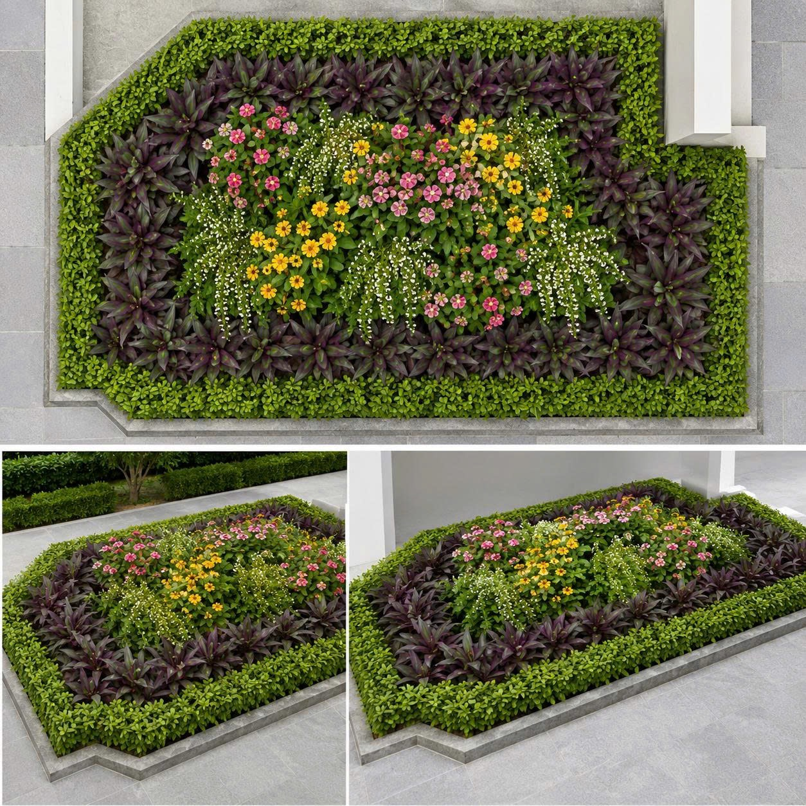
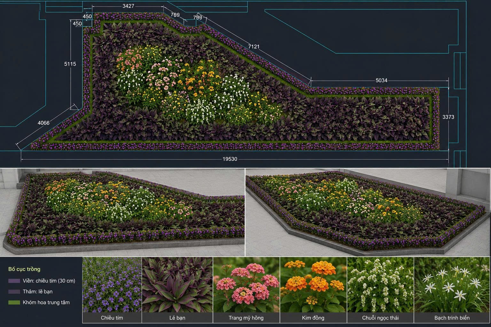
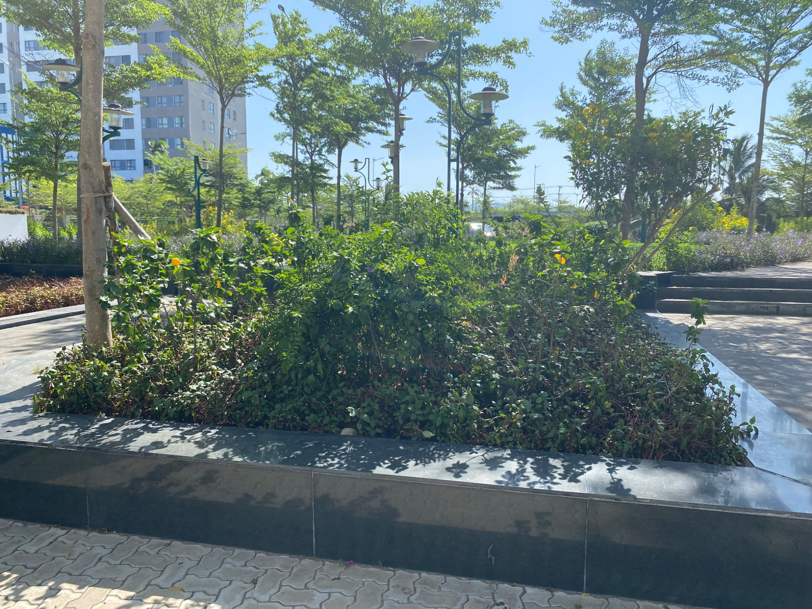
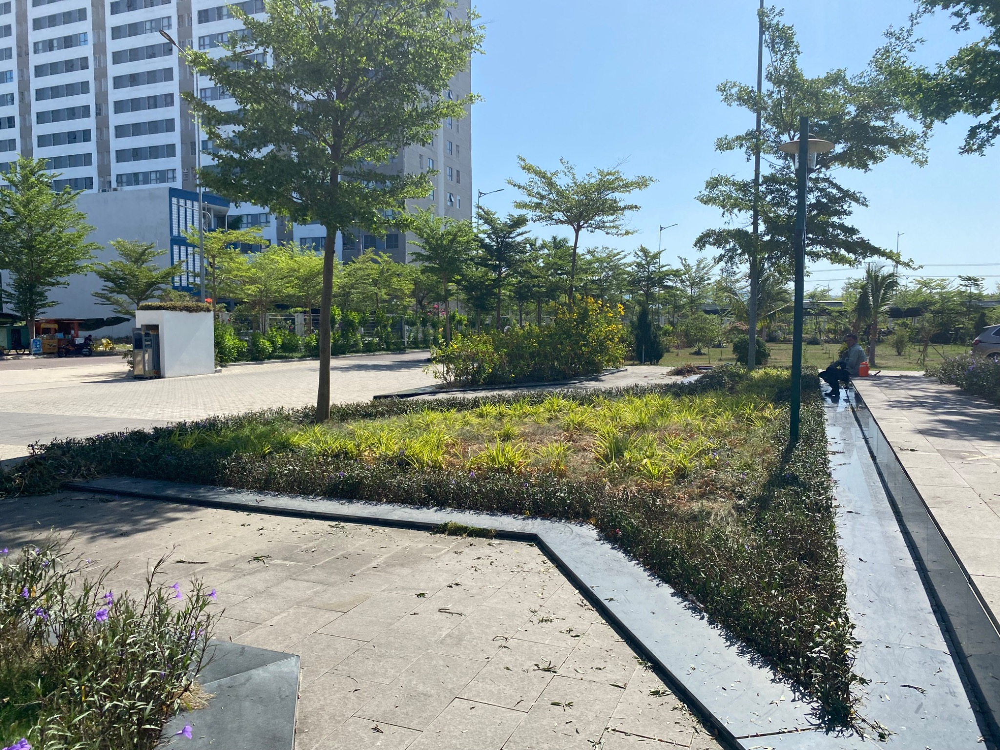
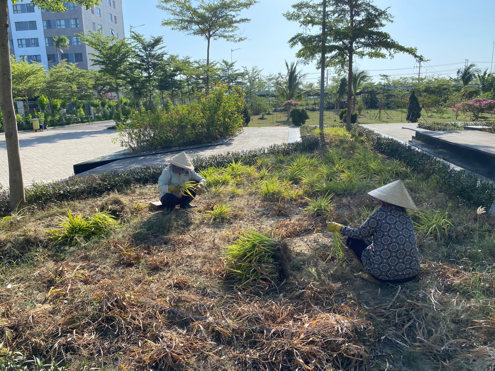
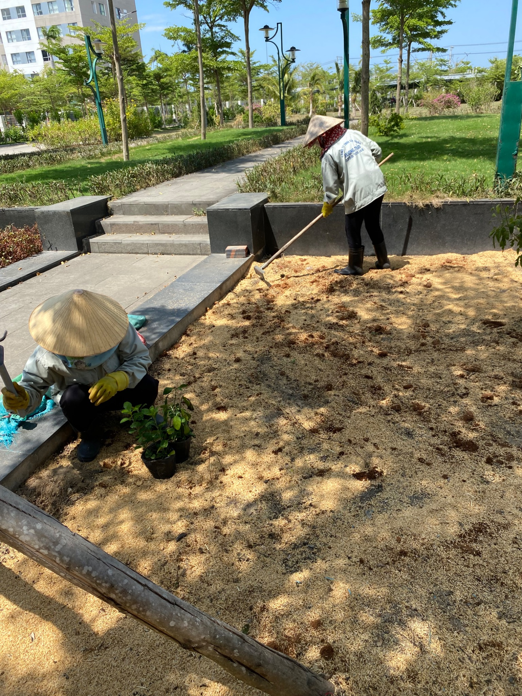
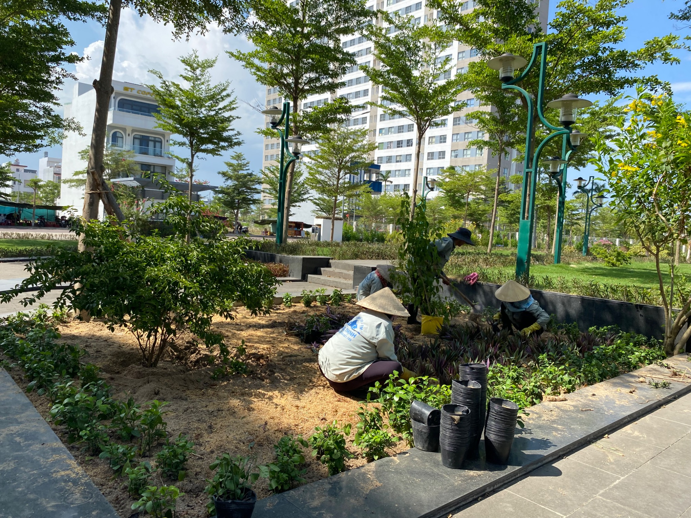
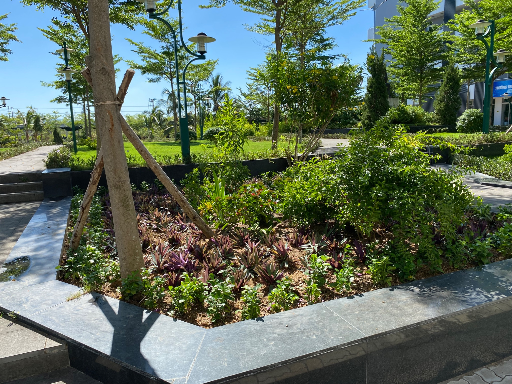
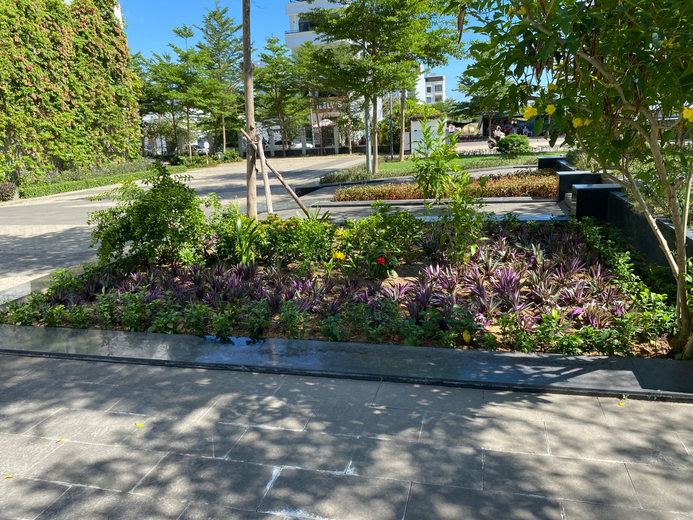

Ý tưởng thiết kế
Mục tiêu của phương án là tổ chức lại bồn cây theo nguyên tắc nhiều tầng cây, tạo điểm nhấn và tăng độ che phủ. Phương án đồng thời ưu tiên khả năng duy trì ổn định trong điều kiện vận hành thực tế của khuôn viên trường học.


Giải pháp bố trí cây
Các nhóm cây được sắp xếp theo tầng cao - trung - thấp để tạo chiều sâu, nhịp điệu và sự chuyển tiếp mềm mại. Danh mục cây thể hiện trên hồ sơ gồm chiều tím, lẻ bạn, trang mỹ hồng, kim đồng, chuỗi ngọc Thái và bạch trinh biển.
Hiện trạng trước khi cải tạo
Qua khảo sát, mật độ cây tại bồn chưa đồng đều, thảm phủ xuất hiện khoảng trống và bố cục không còn rõ nét sau thời gian sử dụng. Giải pháp đặt ra là giữ lại cây hiện hữu còn khỏe mạnh, loại bỏ những vị trí không phù hợp và tái tổ chức toàn bộ mặt bằng.


Quá trình thi công
Thi công được thực hiện theo từng khu vực để kiểm soát bố cục và hạn chế ảnh hưởng đến hoạt động chung. Cây được căn chỉnh trước khi trồng chính thức, bảo đảm đúng mật độ và hình khối dự kiến.



Kết quả hoàn thành
Sau cải tạo, bồn cây có bố cục rõ ràng, màu sắc hài hòa và khả năng che phủ tốt hơn. Việc phân tầng cây tạo chiều sâu cho không gian, đồng thời hỗ trợ công tác chăm sóc, cắt tỉa và thay thế cục bộ về sau.


Giá trị mang lại
Trước cải tạo
Cây phân bố chưa đồng đều; thảm phủ có khoảng trống; điểm nhấn chưa rõ; việc duy trì hình khối khó ổn định.
Sau cải tạo
Bố cục cân đối hơn; tăng che phủ; hình thành điểm nhấn; các lớp cây thuận tiện cho chăm sóc và thay thế.
Giải pháp không tập trung vào thay mới toàn bộ, mà ưu tiên tận dụng cây hiện hữu phù hợp để tối ưu chi phí và duy trì giá trị lâu dài.